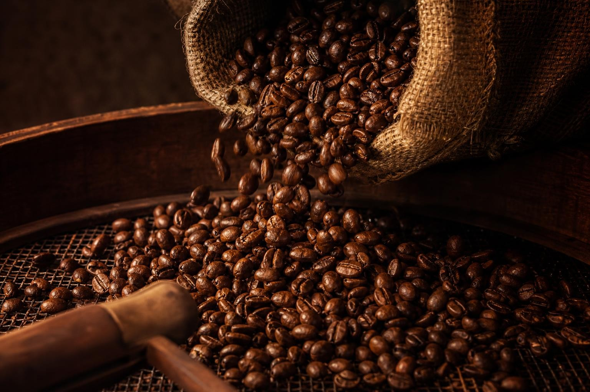

A double shot of the house blend, velvet microfoam, served at 5oz.
Our story
A counter built for conversation
Open Coffee began with one second-hand drum roaster and a stubborn belief: that great coffee should be a place you can walk into, not a subscription you unbox.
We roast in small batches every Tuesday, pulling from farms in Yirgacheffe, Huila and the Western Ghats. The roastery sits behind the bar, so the smell that greets you is not for show — it is the morning's work.
- Small-batch
- Roasted Tuesdays
- 3
- Origins on bar
- Every day
- Fresh pastries
